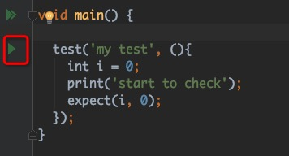

Flutter测试脚本开发
Flutter中支持自动化测试脚本，包括单元测试、组件测试、集成测试等。我们可以使用这些测试方法来验证功能是否正常。
单元测试
Flutter的单元测试实际上就是Dart的单元测试，需要引入相应的库。这里有两种库可供选择：test 或者 flutter_test。其中test库是标准的dart库文件，flutter_test既可用于单元测试也可用于Widget组件测试，推荐使用flutter_test库进行操作。
导入方式
pubspec.yaml 文件中的 dev_dependencies中设置相应依赖：
1 | dev_dependencies: |
使用方法
在test的dart文件中import相应的dart文件，如下面代码所示：
1 | import 'package:flutter_test/flutter_test.dart'; // 使用flutter_test库 |
在代码中可以看到，有两个方法非常重要：void test(Object description, Function body) 与 expect(dynamic actual, dynamic matcher)，前者是执行的入口，后者进行断言校验。
如果想要执行这个测试脚本，使用Android Studio的话，可以在IDE界面上直接手工操作执行，如下图所示：

点击红框中所示按键即可执行。
也可以通过命令执行测试脚本，如下所示：
1 | flutter test --plain-name "my test" test/widget_test.dart |
如果想要执行main方法中的所有测试脚本，执行下面脚本：
1 | flutter test test/widget_test.dart |
使用说明
上面已经说了test()，第一个参数是描述信息，运行时可以通过描述信息执行指定的脚本；第二个参数就是需要执行的方法；此外还有其它可选参数，timeout设置后将替换默认30s的超时时间；skip允许跳过测试（值为String时会打印skip内容）；retry设置重试次数等。
处理test方法外，还有group方法，使用同一个描述信息，用于批量测试脚本执行，如下面代码所示：
1 | group("group test", (){ |
当然，里面的每个test也可以单独执行。另外，通过描述信息执行测试脚本时，同样的描述信息也会默认分为一个group。
- 上面已经说明了一个简单的expect方法使用，但实际上matcher中还可以支持更复杂的比对效果，例如：
1 | test('complex validations', (){ |
- setUp方法与tearDown方法分别在测试脚本执行前和执行后调用，setUp中可以进行一些预处理操作，而tearDown进行一些release操作。例如：
1 | group('setup test', (){ |
上面的示例中还使用了async以及await异步操作，在测试脚本中，这些异步操作完成后才会认为测试结束。另外还有一些为异步处理提供的匹配器方法。比如
1
2
3
4
5
```dart
test('async test', (){
expect(new Future.value(10), completion(equals(10)));
});异步操作还有
expectAsync系列方法，包括expectAsync1、expectAsync2··· expectAsync6，这些方法的区别主要是参数的不同。这个方法有两个作用，方法中有一个参数count，如果方法执行的次数没有达到count数量，会一直等待，测试脚本不会结束；另外如果执行次数超过了count，则会断言失败。下面是一个示例：
1 | test('expectAsyn', (){ |
组件测试
组件测试可以模拟界面环境，同时模拟一些交互操作，校验反馈结果达到测试效果，需要导入flutter_test库来使用。
使用方法
在test的dart文件中import相应的dart文件，下面代码所示就是默认生成的测试文件：
1 | import 'package:flutter/material.dart'; |
相比单元测试来说，测试入口变成了testWidgets，这个方法要求传入的方法对象中必须有WidgetTester类型的参数，除此以外与单元测试的使用方法基本相同。
界面执行方法、脚本执行方法都与单元测试完全一致，因此不再继续说明。
使用说明
组件测试中新增WidgetTester对象能够模拟发送点击或滚动的交互事件，再加上在widget树中查找widget的能力。这两个核心功能组成了组件测试需要的界面验证能力。
下面具体说一下WidgetTester常用到的方法：
Future<void> pumpWidget(Widget widget)这个方法来导入一个Widget，模拟了一个headless界面。Future<void> tap(Finder finder, {int pointer})这个方法来触发一个点击事件，点击的位置由Finder确定，在Widget树中找到的一个widget。实际上还有Future<void> tapAt(Offset location, {int pointer})这个方法，在某个具体位置触发一下点击事件。另外还有press、longPress、fling、drag等多种操作，甚至可以自定义手势处理。Future<void> pump()触发widget更新。交互事件完成后触发界面更新，就可以验证结果是否正确。
现有问题
目前Flutter为了保证测试速度，默认HTTP请求的返回值永远都是空的，返回码都是400 - Bad Request。因此涉及到Image.network()，或者类似的其它组件时，会出现问题导致验证过程异常。
这个问题可以通过模拟返回结果的方式来进行规避，但是不是一个最终的解决方案，也无法达到满意的结果。
集成测试
集成测试与单元测试以及组件测试不同，它集成了更多功能，因此这种测试方式需要真实的环境支持，与Android测试使用的Espresso或者UI Automater类似。
导入方式
pubspec.yaml 文件中的 dev_dependencies中设置相应依赖：
1 | dev_dependencies: |
使用方法
我们要使用集成测试，需要做两件事情：
- 创建指令化的应用程序，也就是说可以通过指令方式调用需要展示的应用界面
- 增加测试项，设置自动交互效果
创建指令化的应用程序
指令化应用需要在应用运行前启用Flutter Driver 扩展。也就是说在运行前调用enableFlutterDriverExtension()。该方法执行后调用正常应用的main方法，或者直接runApp方法。如下面示例：
1 | import 'package:flutter_app/main.dart' as mainDart; |
需要注意的是这个dart文件必须放置于test_driver文件夹中，否则命令行执行时有可能找不到可执行文件。现在这个dart文件命名为drive_test.dart
增加测试项
在上面dart文件同级目录下，新增一个文件，注意文件名称必须为指令化文件名称+'_test'，比如这次我就需要命名为drive_test_test.dart。
测试项与之前组件测试、单元测试内容差不多，不过需要注意的是不能直接导入flutter_test库，而导入test库，否则会导致find重复定义的问题。当然导入flutter_test库也可以，需要特殊标明find位置。
1 | import 'package:flutter_driver/flutter_driver.dart'; |
命令行运行
集成测试不支持Android Studio手工操作，需要通过命令行执行。否则会出现如下错误：
1 | DriverError: Could not determine URL to connect to application. |
这是因为界面操作的情况下不是执行flutter driver命令，因此需要手工执行如下命令(前提是手机已经使用USB连接，并启用了USB调试)：
1 | flutter drive --target=/Users/sunwenwu/project/flutter_app/flutter_app/test_driver/drive_test.dart |
最终运行结果可以看到，手机上自动打开此应用，每隔1s计数器加1，增加五次以后，应用自动退出。
性能跟踪
实际上集成测试除了进行界面自动化测试外，还可以收集测试过程中的性能数据，上面的测试项代码可以写为如下内容：
1 | test('add auto test', () async { |
执行完毕后性能数据写到了stocks_scroll_perf文件中。